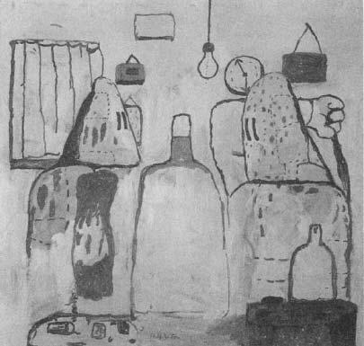
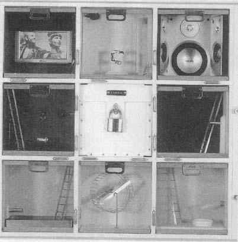
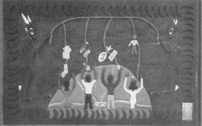

Okay, it’s great that we’re trying to understand how stress works and how to live healthier lives and make the world a better place and all that, but it’s time we devoted a little space to a really important issue—why can’t we tickle ourselves?
Okay, it’s great that we’re trying to understand how stress works and how to live healthier lives and make the world a better place and all that, but it’s time we devoted a little space to a really important issue—why can’t we tickle ourselves?
Before tackling this profound question, we first need to consider why not all people can make you feel ticklish. It probably requires that it be a person that you feel positive about. Thus, you’re five and there’s no one who can evoke ticklish feelings in you like your nutty uncle who chases you around the room first. Or you’re twelve and it’s the person in junior high school who’s making your stomach feel like it’s full of butterflies and making other parts of your body feel all mysterious and weird. It’s why most of us probably wouldn’t get the giggles if we were tickled by, say, Slobodan Milosovic.
Most of us feel fairly positive about ourselves. So why can’t we tickle ourselves? Philosophers have ruminated on this one through the ages, and have come up with some speculations. But theories about self-tickling are a dime a dozen. Finally, a scientist has tackled this mystery by doing an experiment.
Sarah-Jayne Blackmore of the University College of London first theorized that you can’t tickle yourself because you know exactly when and where you’re going to be tickled. There’s no element of surprise. So she set out to test this by inventing a tickling machine. It consists of a lever attached to a foam pad where, thanks to various pulleys and fulcrums run by a computer, when you move the lever with one hand, the foam pad almost instantaneously strokes the palm of the other hand, moving in the same direction as the movement of the lever.
Being a hard-nosed scientist, Blackmore quantified the whole thing, coming up with a Tickle Index. Then reinvent the wheel—if someone else operates the lever, it tickles you; if you do, nope. No element of surprise. You can’t tickle yourself, even with a tickle machine.
Then Blackmore tested her theory by removing the sense of predictability from the self-tickling process. First, remove the sense of predictability about when the tickling occurs—the person moves the lever and, unexpectedly, there’s a time lag until the foam pad moves. Anything more than three-tenths of a second delay and it scores as high of a Tickle Index as if someone else had done it. Now, remove the sense of predictability about where the tickling occurs—the person moves the lever, say, forward and back, and, unexpectedly, the foam pad moves in a different direction. Anything more than a 90-degree deviation from where you expected the pad to move, and it feels as ticklish as if someone else had done it.*
Now we’ve gotten somewhere. Being tickled doesn’t feel ticklish until there is an element of surprise. Of unpredictability. Of lack of control. And suddenly, our beautiful world of tickle science is shattered around us. We spent a whole bunch of time some pages back learning about how the cornerstones of psychological stress are built around a lack of control and predictability. Those were bad things, yet most of us like being tickled by the right person.*
Hey, wait a second—more pieces of our grand edifice begin to crumble—we stand in long lines to see movies that surprise and terrify us, we bungee jump and go on roller coasters that most definitely deprive us of a sense of control and predictability. We pay good money to be stressed sometimes. And, as long as we’re at it, as we’ve seen already, we turn on the sympathetic nervous system and secrete ample amounts of glucocorticoids during sex, what’s up with that? Chapter 9 oriented us to the role of stress-induced analgesia in making us feel less awful during stress. But, as the starting point of this chapter, if you get the right amount of stress, if you get allostatically challenged just right, it doesn’t just feel less awful; it can feel great.
So how does that work? And why do some people find stress and risk-taking to feel so great that they get addicted? And how does stress interact with the pleasures and addictive qualities of various substances of abuse?
The Neurochemistry of Pleasure
As we saw in chapter 14, the brain contains a pleasure pathway that makes heavy use of the neurotransmitter dopamine. As we also saw in that chapter, if that pathway becomes depleted of dopamine, anhedonia or dysphoria can be an outcome. This “dopaminergic” projection begins in a region deep in the brain called the ventral tegmentum. It then projects to something called the nucleus accumbens and then, in turn, goes on to all sorts of other places. These include the frontal cortex which, as we saw in chapters 10 and 12, plays a key role in executive function, decision making, and impulse control. There are also projections to the anterior cingulate cortex which, as we saw in chapter 14, seems to play a role in having a sense of sadness (leading to the idea that the dopaminergic projection normally inhibits the cingulate). There’s also a heavy projection into the amygdala which, as we saw in the last chapter, plays a key role in anxiety and fear.
The relationship between dopamine and pleasure is subtle and critical. On first pass, one might predict that the neurotransmitter is about pleasure, about reward. For example, take a monkey who has been trained in a task: a distinctive bell sounds, which means that the monkey now presses a lever ten times; this leads, ten seconds later, to a desirable food reward. You might initially guess that activation of the dopamine pathway causes neurons in the frontal cortex to become their most active in response to the reward. Some brilliant studies by Wolfram Schultz of the University in Fribourg in Switzerland showed something more interesting. Yes, frontal neurons become excited in response to reward. But the biggest response comes earlier, around the time of the bell sounding and the task commencing. This isn’t a signal of, “This feels great.” It’s about mastery and expectation and confidence. It’s “I know what that light means. I know the rules: IF I press the lever, THEN I’m going to get some food. I’m all over this. This is going to be great.” The pleasure is in the anticipation of a reward; from the standpoint of dopamine, the reward is almost an afterthought.

Philip Guston, Bad Habits, oil on canvas, 1970.
Psychologists refer to the period of anticipation, of expectation, of working for reward as the “appetitive” stage, one filled with appetite, and call the stage that commences with reward the “consummatory” stage. What Schultz’s findings show is that if you know your appetite is going to be sated, pleasure is more about the appetite than about the sating.*
The next key thing to learn is that the dopamine and its associated sense of pleasurable anticipation fuels the work needed to get that reward. Paul Phillips from the University of North Carolina has used some immensely fancy techniques to measure millisecond bursts of dopamine in rats and has showed with the best time resolution to date that the burst comes just before the behavior. Then, in the clincher, he artificially stimulated dopamine release and, suddenly, the rat would start lever pressing. The dopamine does indeed fuel the behavior.
The next critical point is that the strength of these pathways can change, just like in any other part of the brain. There’s the burst of dopaminergic pleasure once that light comes on, and all that is required is to train for longer and longer intervals between light and reward, for those anticipatory bursts of dopamine to fuel ever-increasing amounts of lever pressing. This is how gratification postponement works—the core of goal-directed behavior is expectation. Soon we’re forgoing immediate pleasure in order to get good grades in order to get into a good college in order to get a good job in order to get into the nursing home of our choice.
Recent work by Schultz adds a twist to this. Suppose in one setup, the subject gets a signal, does a task, and then gets a reward. In the second situation, there’s the signal, the task, and then, rather than a certainty of reward, there’s simply a high probability of it. In other words, within a generally benevolent context (that is, the outcome is still likely to be good), there’s an element of surprise. Under those conditions, there is even greater release of dopamine. Right after the task is completed, dopamine release starts to rise far higher than usual, peaking right around the time that the reward, if it’s going to happen, should be arriving. Introduce, “This is going to be great…maybe…probably…” and your neurons spritz dopamine all over the place in anticipation. This is the essence of why, as we learned in Intro Psych, intermittent reinforcement is so reinforcing. What these findings show is that if you think there’s a reasonably good chance that your appetite is going to be sated, but you’re not positive, pleasure becomes even more about the appetite than about the sating.
So dopamine plays an important role in the anticipation of pleasure and in energizing you in order to respond to incentives. However, it can’t be the whole story of pleasure, reward, and anticipation. For example, rats can still respond to reward to some extent even when artificially depleted of dopamine in those pathways. Opioids probably play a role in the other pathways involved. Moreover, the dopamine pathway might be most relevant to spiky, intense versions of anticipation. A recent and fascinating study shows this. Get some college students (either gender) who are in what they believe to be their “one true love” relationship. Put them in a scanner and flash up various familiar but neutral faces. Somewhere along the way, flash up a picture of the student’s beloved. For people who were in the first few months of the relationship, the dopamine pathways lit up. For people whose relationship was more on the order of years, that’s not what happened. Instead, there was activation of the anterior cingulate, that part of the brain discussed in the chapter on depression. The tegmentum/accumbens dopamine system seems to be about edgy, make-you-crazy-with-anticipation passion. Two years later, it’s the cingulate weighing in, mediating something akin, perhaps, to comfort and warmth…or maybe even a nonhyperventilating version of love.
Stress and Reward
So the really good thing about being tickled is the anticipation of being tickled. The element of surprise and lack of control. In other words, we’re back to where we started—when does a lack of control and predictability fuel dopamine release and a sense of anticipatory pleasure, and when is it the core of what makes psychological stress stressful?
The key seems to be whether the uncertainty occurs in a benign or malevolent context. If it’s the right person tickling you in that adolescent stage of being on the cusp of sexuality, maybe, just maybe, that tickling is going to be followed by something really good, like hand-holding. In contrast, if it’s Slobodan Milosovic who is tickling you, maybe, just maybe, it will be followed up by his trying to ethnically cleanse you. If the context is one of you being at risk for getting shocked, the lack of predictability adds to the stress. If the context is one in which that special someone is likely to eventually say yes, her running hot and cold is all that’s needed to start you off on a fifty-year courtship. Part of what makes the Las Vegas world of gambling so addictive is the brilliant ways in which people are manipulated into thinking that the environment is a benign, rather than malevolent, one—the belief that the outcome is likely to be a good one, especially for someone as lucky and special as you…so long as you keep putting in those coins and pressing that lever.
What makes for the benign sort of environment in which uncertainty is pleasurable, rather than stressful? One key element is how long the experience goes on. Pleasurable lack of control is all about transience—it’s not for nothing that roller-coaster rides are three minutes rather than three weeks long. Another thing that biases toward uncertainty being pleasurable is if it comes bound within a larger package of control and predictability. No matter how real and viscerally gripping the scary movie may be, you still know that Anthony Perkins is stalking Janet Leigh, not you. No matter how wild and scary and unpredictable and exhilarating the bungee jumping is, it’s still in the context of having assured yourself that these folks have a license from the Bungee Jumping Safety Police. This is the essence of play. You surrender some degree of control—think of how a dog initiates play with another dog by crouching down, making himself smaller, more vulnerable and less in control. But it has to be within a larger context of safety. You don’t roll over and expose your throat in play to someone you haven’t sniffed over carefully.
Time now to introduce some really unexpected neurochemistry that ties this all together. Glucocorticoids, those hormones which have been discovered at the scene of the crime for virtually all the stress-related pathology we’ve been learning about, those same villainous glucocorticoids…will trigger the release of dopamine from pleasure pathways. It’s not some generic effect upon all the dopamine pathways in the brain. Just the pleasure pathway. Most remarkably, Pier Vincenzo Piazza and Michel Le Moal of the University of Bordeaux in France have shown that lab rats will even work in order to get infused with glucocorticoids, will lever-press the exact amount needed to maximize the amount of dopamine released by the hormone.
And what is the pattern of glucocorticoid exposure that maximized dopamine release? You can probably guess already. A moderate rise that doesn’t go on for too long. As we’ve seen, experience severe and prolonged stress, and learning, synaptic plasticity, and immune defenses are impaired. As we saw, experience moderate and transient stress, and memory, synaptic plasticity, and immunity are enhanced. Same thing here. Experience severe and prolonged glucocorticoid exposure, and we’ve returned to chapter 14—dopamine depletion, dysphoria, and depression. But with moderate and transient glucocorticoid elevation you release dopamine. And transient activation of the amygdala releases dopamine as well. Couple the glucocorticoid rise with the accompanying activation of the sympathetic nervous system, and you’re also enhancing glucose and oxygen delivery to the brain. You feel focused, alert, alive, motivated, anticipatory. You feel great. We have a name for such transient stress. We call it “stimulation.”*
Adrenaline Junkies
What does this tell us about the subset of people who thrive on stress and risk-taking, who are most alive under circumstances that would ulcerate anyone else?* These are the folks who push every envelope. They spend every last dollar in Monopoly, have furtive sex in public places, try out a new, complicated recipe on important dinner guests, answer the ad in Soldier of Fortune. What’s up with them?
We can make some pretty informed guesses. Maybe they release atypically low amounts of dopamine. Or, as another version of the same problem, maybe they have versions of dopamine receptors that are atypically unresponsive to a dopamine signal. In that scenario, it’s hard to “just say no” to some thrilling possibility when there’s not a whole lot of pleasurable yes’s in one’s life (a point that we’ll return to when considering substance abuse). Supporting this idea are some reports of atypical versions of dopamine receptors in people with addictive personalities.*
As another possibility, maybe the baseline of dopamine signaling is fine, but those transients of stimulation cause whopping great rises of dopamine, bigger anticipatory pleasure signals than in most other people. That would certainly encourage one to try the stuff again.
There’s yet another possibility. Experience something thrilling with the right intensity and duration, and dopamine is released in the pleasure pathway. End of experience, dopamine levels go back down to baseline. What if someone’s brain happens not to be great at keeping up with dopamine reserves in the pleasure pathway? As a result, at the end of a stimulating increase in dopamine release, dopamine levels not only drop back to baseline, but to a smidgen below baseline. In other words, a little lower than where you started. What’s the only solution then to counteract this mild dysphoria, this mild inability to anticipate pleasure? Find something else that’s thrilling and, of necessity, a bit riskier, in order to achieve the same dopamine peak of the prior time. Afterward, your baseline drops a bit lower. Necessitating another, and another stimulant, each one having to be bigger, in the search for the giddy heights of dopamine that you reached that first time.
This is the essence of the downward ratcheting of addiction. Once, a long time ago, the sixteen-year-old Evel Knievel, behind the steering wheel with his brand-new driver’s permit, sped up to beat a red light, and got a bit of a buzz from this. He then discovered, the next time doing it, that it didn’t feel quite as exciting.
Addiction
There’s an astonishing number of substances that different cultures have come up with that can cause you to be ruinously addicted, to compulsively take the substance despite negative consequences. The field of addiction research has long had to grapple with the sheer variety of these compounds, from the standpoint of understanding their effects on brain chemistry. Alcohol is very different from tobacco or cocaine. Let alone trying to make sense of how things like gambling or shopping wind up being addictive.
Amid this variety, though, there’s a critical commonality, which is that these compounds all cause the release of dopamine in the ventral tegmentum-nucleus accumbens pathway. Not all to the same extent. Cocaine, which directly causes the release of dopamine from those neurons, is extremely good at doing it. Other drugs which do so through intervening steps are much less potent—alcohol, for example. But they all do to at least some extent, and in brain-imaging studies of humans taking addictive drugs, the more subjectively pleasurable a person finds a particular exposure to a drug to have been, the more activation of that pathway. This certainly makes sense and defines an addictive substance—you anticipate how pleasurable it will be and thus come back for more.
But addictive substances are not only addictive, but also typically have the property of causing tolerance, or habituation. In other words, you need increasing amounts of the stuff to get the same anticipatory oomph as before. The explanation lies, in part, with the magnitude of dopamine released by these compounds. Consider some of the sources of pleasure we have—promotion at work, beautiful sunset, great sex, getting a parking spot where there’s still time on the meter. They all release dopamine for most people. Same thing for a rat. Food for a hungry rat, sex for a horny one, and dopamine levels rise 50 to 100 percent in this pathway. But give the rat some cocaine and there is a THOUSAND-FOLD increase in dopamine release.

Toland Grinnell, Rodent Addiction System (White), detail, mixed media, 2003.
What’s the neurochemical consequence of this tidal wave of dopamine? We considered a related version in chapter 14. If someone always yells at you, you stop listening. If you flood a synapse with a gazillion times more of a neurotransmitter than is usually the case, the recipient neuron has to compensate by becoming less sensitive. No one is sure what the mechanism is for what’s termed an “opponent process” that counteracts the dopamine blast. Maybe fewer dopamine receptors, maybe fewer of whatever the dopamine receptors connect to. But regardless of the mechanism, the next time, it is going to take even more dopamine release to have the same impact on that neuron. This is the addictive cycle of escalating drug use.
Around this point, there is a transition in the process of addiction. Early on, addiction is about “wanting” the drug, anticipating its effects, and about how high those dopamine levels are when they’re pouring out in a drug-induced state (in addition, the release of endogenous opiates around this time fuels that sense of “wanting”). It’s about the motivation to get the reward of a drug. With time there’s the transition to “needing” the drug, which is about how low the dopamine lows are without the drug. The stranglehold of addiction is when it is no longer the issue of how good the drug feels, but how bad its absence feels. It’s about the motivation to avoid the punishment of not having the drug. George Koob of the Scripps Research Institute has shown that when rats are deprived of a drug they are addicted to, there is a tenfold increase in levels of CRH in the brain, particularly in pathways mediating fear and anxiety, such as in the amygdala. No wonder you feel so awful. Brain-imaging studies of drug users at that stage show that viewing a film of actors pretending to use drugs activates dopamine pathways in the brain more than does watching porn films.
This process emerges in the context of the uncertainty and intermittent reinforcement that we discussed earlier. You’re pretty sure you’ve scraped together enough money, you’re pretty sure you can find a dealer, you’re pretty sure you won’t get caught, you’re pretty sure it will be good stuff—but still, there’s that element of uncertainty amid the anticipation, and that stokes the addictiveness like crazy.
So this tells us something about the acquisition of addiction, the downward spiral of tolerance to the drug, and the psychological contexts in which those processes can occur. There’s a last basic feature of addiction that needs to be discussed. Consider the rare individual who has beaten his addiction, left his demons behind, rebooted and started a new life. It’s been months, years, even decades since he’s gone near the drug. But uncontrollable circumstances put him back where he always used the drug back when—back on that same street corner, in that same music studio, back in the same overstuffed armchair near the bar in the country club—and the craving comes roaring back like it was yesterday. The capacity to induce that craving doesn’t necessarily decline with time; as many drug abusers in that situation will say, it is as if they had never stopped using.
This is the phenomenon of context-dependent relapse—the itch is stronger in some places than others, specifically in places that you associate with prior drug use. You can show the identical phenomenon in a lab rat. Get them addicted to some substance, where they are willing to lever-press like mad to get infused with the stuff. Stick them in a novel cage with a lever and you may get some lever pressing out of them. But put them back in the cage that they associate with the drug exposure, and they lever-press like mad. And, as with humans, the potential for relapse doesn’t necessarily decrease over time.
This process of associating drug use with a particular setting is a type of learning, and a lot of current addiction research explores the neurobiology of such learning. This work focuses not so much on those dopamine neurons, but on the neurons that project to them. Many of them come from cortical and hippocampal regions that carry information about setting. If you repeatedly use a drug in the same setting, those projections onto those dopamine neurons are repeatedly activated and eventually become potentiated, strengthened, in the same ways as the hippocampal synapses we learned about in chapter 10. When those projections get strong enough, if you return to that setting, the dopamine anticipation of the drug gets triggered merely by the context. In a lab rat in this situation, you don’t even need to place the animal back into the same setting. Just electrically stimulate those pathways that project onto the dopamine neurons, and you reinstate the drug craving. As goes one of the clichés of addiction, there’s really no such thing as an ex-addict—it is simply an addict who is not in the context that triggers use.
Stress and Substance Abuse
We are finally in a position to consider the interactions between stress and drug abuse. We begin by considering what taking any of various psychostimulant drugs does to the stress-response. And everyone knows the answer to that one—“I’m not feeling any pain.” Drugs of abuse make you feel less stressed.
In general, the evidence is pretty decent for this, given a few provisos. People do generally report themselves as feeling less stressed, less anxious, if a stressor occurs after some psychoactive drug’s effects have kicked in. Alcohol is best known for this, and is formally termed an anxiolytic, a drug that “lyses,” or disintegrates anxiety. You can show this with a lab rat. As discussed in the last chapter, rats hug the dark corners when put into a brightly lit cage. Put a hungry rat in a cage with some food in the brightly lit center, and how long does it take to overcome its anxious conflict and go for the food? Alcohol decreases the time to do this, as do many other addictive compounds.
How does this work? Many drugs, including alcohol, raise glucocorticoid levels when they are first taken. But with more sustained use, various drugs can blunt the nuts and bolts of the stress-response. Alcohol, for example, has been reported in some cases to decrease the extent of sympathetic nervous system arousal and to dampen CRH-mediated anxiety. In addition, drugs may change the cognitive appraisal of the stressor. What does that jargon mean? Basically, if you’re in such a mess of an altered state that you can barely remember what species you are, you may not pick up on the subtle fact that something stressful has occurred.
Intrinsic in that explanation is the downside of the anxiety-reducing consequences of getting wasted. As the blood levels of the drug drop, as the effects wear off, the cognition and reality sneak back in and, if anything, the drugs become just the opposite, become anxiety-generating. The dynamics of many of these drugs in the body is such that the amount of time that blood levels are rising, with their stress-reducing effects, is shorter than the amount of time that they are dropping. So what’s the solution? Drink, ingest, inhale, shoot up, snort all over again.
So various psychostimulants can decrease stress-responses, secondary to blunting the machinery of the stress-response, plus making you such a disoriented mess that you don’t even notice that there’s been a stressor. How about the flip side of this relationship: What does stress have to do with the likelihood of taking (and abusing) drugs? The clear punch line is that stress pushes you toward more drug use and a greater chance of relapse, although it’s not completely clear how stress does this.
The first issue is the effect of stress on initially becoming addicted. Set up a rat in a situation where if it presses a lever X number of times, it gets infused with some potentially addictive drug—alcohol, amphetamines, cocaine. Remarkably, only some rats get into this “self-administration” paradigm enough to get addicted (and we’ll see shortly which rats are more likely). If you stress a rat just before the start of this session of drug exposure, it is now more likely to self-administer to the point of addiction. And just as you’d expect from chapter 13, unpredictable stress drives a rat toward addiction more effectively than does predictable stress. Similarly, put a rat or a monkey in a position of being socially subordinate, and the same increased risk occurs. And, no surprise, stress clearly increases alcohol consumption in humans as well.
Importantly, stress increases the addictive potential of a drug only if the stressor comes right before the drug exposure. In other words, short-term stress. The type that boosts dopamine levels transiently. Why does stress have this effect? Imagine that you go into a bout of exposure to a novel, potentially addictive drug, and you just happen to be the type of rat or human for whom the drug doesn’t do a whole lot—you’re not releasing much dopamine or the other neurotransmitters involved, you’re not getting this anticipatory sense afterward of wanting to do it again. But couple that same ho-hum dopamine rise with a rise due to stress and, whoa, you erroneously decide that something cosmic has just happened—where can you get some more? Thus, acute stress increases the reinforcing potential of a drug.
All that makes sense. But, naturally, things get more complicated. Stress increases the likelihood of self-administering a drug to an addictive extent, but this time we’re talking about stress during childhood. Or even as a fetus. Stress a pregnant rat and her offspring will have an increased propensity for drug self-administration as adults. Give a rat an experimentally induced birth complication by briefly depriving it of oxygen at birth, and you produce the same. Ditto if stressing a rat in its infancy. The same works in nonhuman primates—separate a monkey from its mother during development, and that animal is more likely to self-administer drugs as an adult. The same has been shown in humans.
In these instances, the stressor during development can’t be working merely by causing a transient rise in dopamine release. Something long term has to be occurring. We’re back in chapter 6 and perinatal experiences causing lifelong “programming” of the brain and body. It’s not clear how this works in terms of addictive substances, other than that there obviously has to be a permanent change in the sensitivity of the reward pathways.
What about once the addiction has occurred—what does ongoing stress do to the extent of abuse? No surprise, it increases it. How does this work? Maybe because of transient stressors briefly boosting dopamine levels and giving the drug more oomph. But by now, the main point for the addict may not be about wanting the high as much as needing to avoid the low of drug withdrawal. As noted, during this time, levels of anxiety-mediating CRH are way up in the amygdala. Moreover, glucocorticoid secretion is consistently elevated during withdrawal, into the range where it depletes dopamine. And what happens if you add additional stress on top of that? All that the extra glucocorticoids can do in this scenario is make the dopamine depletion even worse. Thus increasing the craving for that drug-induced boost of dopamine.
What about that rare individual who manages to stop abusing whatever drug she’s addicted to and successfully goes on the wagon? Stress increases the odds of her relapsing into drug use. As usual, the same is true in rats. Get a rat who is self-administering a drug by lever pressing to the point of addiction. Now, switch the rat to being infused with saline instead of with the drug. Soon the lever pressing “extinguishes”—the rat gives up on it, won’t bother with the lever anymore. Some time later, return the rat to that cage with the drug-associated lever and there’s an increased likelihood that the rat will try lever pressing for the drug again. Infuse the rat with a bit of the drug just before returning it to that familiar locale and it’s even more likely to start self-administering again—you’ve reawakened the taste for that drug. If you stress the rat right before you return it to the cage, it’s even more likely to restart the drug use. As usual, unpredictable and uncontrollable stressors are the ones that really revive the drug use. And, as usual, the human studies show basically the same thing.
How does stress do this? It’s not entirely clear. The effects of glucocorticoids on dopamine release may be relevant, but I have not seen a clear model built around their interaction. Maybe it’s the stress-induced increase in sympathetic arousal, mediated by CRH in the amygdala. There’s also some evidence suggesting that stress will increase the strength of those associative projections into the pleasure pathway. Perhaps it has something to do with stress impairing the functioning of the frontal cortex, which normally has that sensible, restraining role of gratification postponement and decision making—shut down your frontal cortex and suddenly you have what seems like an irresistibly clever idea: “I know, why don’t I start taking that drug again which nearly destroyed my life.”
So stress can increase the odds of abusing a drug to the point of addiction in the first place, make withdrawal harder, and make relapse more likely. Why do all the above happen more readily to some people than others? Immensely interesting work by Piazza and Le Moal has started to answer this.
Remember those apples and pears in chapter 5? Who are the individuals who are more prone toward putting on fat around their gut, becoming apples, the less healthy version of fat deposition? We saw that they are likely to be people with more of a tendency to secrete glucocorticoids in response to stressors, and to have a slower recovery from such a stress-response. Same thing here. Which rats are most likely to self-administer when given a chance and, once self-administering, to do so to the point of escalating addiction? The ones who are “high reactors,” who are most behaviorally disrupted by being placed in a novel environment, who are more reactive to stress. They secrete glucocorticoids longer than the other rats in response to a stressor, causing them to pour out more dopamine when they are first exposed to the drug. So if you’re the kind of rat who is particularly thrown out of kilter by stress, you’re atypically likely to try something that temporarily promises to make things right.
The Realm of Synthetic Pleasure
Chapter 13 raised the important point that positive and negative affect are not mere opposites of each other, and that they can independently influence one’s risk of depression. Addiction maps onto this point well, in that an addiction can broadly serve two dissociable functions. One involves positive affect—drugs can generate pleasure (albeit with an ultimate cost that offsets the transient rewards). The other function concerns negative affect—drugs can be used to try to self-medicate away pain, depression, fear, anxiety, and stress. This dual purpose transitions us to the next chapter with its theme that society does not evenly distribute healthy opportunities for pleasure, or sources of fear and anxiety. It is hard to “just say no” when life demands a constant vigilance and when there are few other things to which to say “yes.”
The premise of this book is that we humans, especially we westernized humans, have come up with some pretty strange sources of negative emotions—worrying about and being saddened by purely psychological events that are displaced over space and time. But we westernized humans have also come up with some strange sources of positive emotions.
Once, during a concert of cathedral organ music, as I sat there amid that tsunami of sound getting gooseflesh, I was struck with a thought—way back when, for a medieval peasant, this must have been the loudest human-made sound they would ever experience, something that would be awe-inspiring in ways we can no longer imagine. No wonder they signed up for the religion being proffered. And now we are constantly pummeled with sounds that dwarf quaint cathedral organs. Once, hunter-gatherers might chance upon a gold mine—honey from a wild bee hive—and thus would briefly satisfy one of our most hard-wired food cravings. Now we have hundreds of carefully engineered, designed, and marketed commercial foods filled with rapidly absorbed processed sugars that cause a burst of sensation that can’t be matched by some lowly natural food. Once, we had lives that, amid considerable privation and negatives, also offered a huge array of subtle and often hard-won pleasures. And now we have drugs that cause spasms of pleasure and dopamine a thousand-fold higher than anything stimulated in our drug-free world.

Leroy, Almon, Mr. and Mrs. Satan Fishing, 1994.
Peter Sterling, of allostasis fame, has written brilliantly about how our sources of pleasure have become so narrowed and artificially strong. His thinking centers around the fact that our anticipatory pleasure pathway is stimulated by many different things. For this to work, the pathway must rapidly habituate, must desensitize to any given source that has stimulated it, so that it is prepared to respond to the next stimulant. But unnaturally strong explosions of synthetic experience and sensation and pleasure evoke unnaturally strong degrees of habituation. This has two consequences. As the first, soon we hardly notice anymore the fleeting whispers of pleasure caused by leaves in autumn, or by the lingering glance of the right person, or by the promise of reward that will come after a long, difficult, and worthy task. The other consequence is that, after awhile, we even habituate to those artificial deluges of intensity and moment-ness. If we were nothing but machines of local homeostatic regulation, as we consume more, we would desire less. But instead, our tragedy is that we just become hungrier. More and faster and stronger. “Now” isn’t as good as it used to be, and won’t suffice tomorrow.